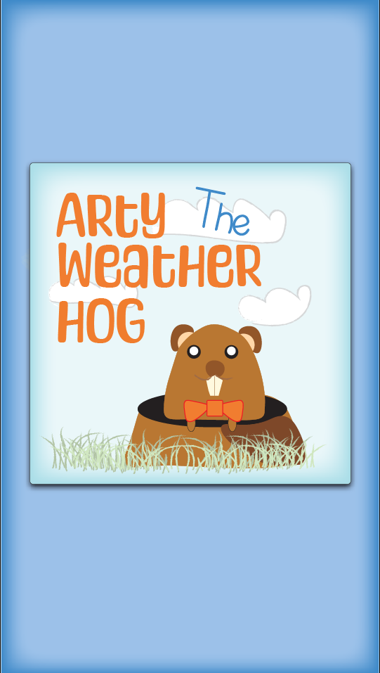
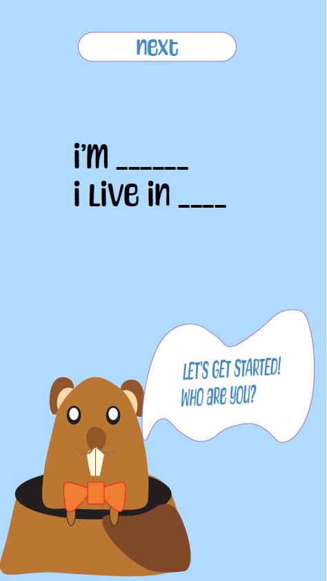
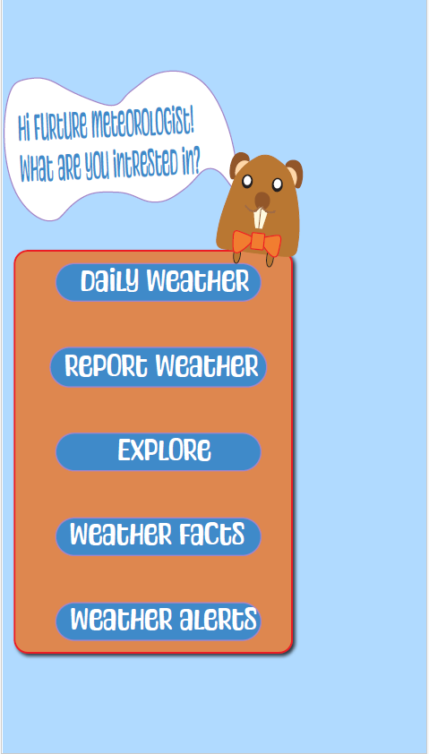
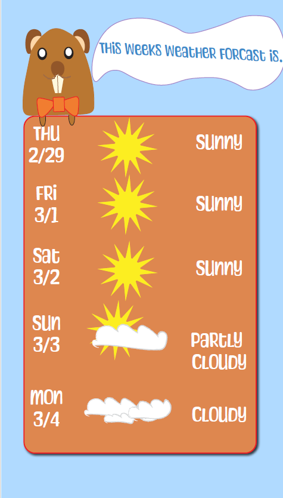
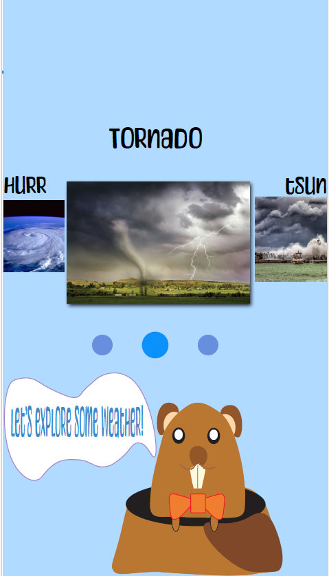

Arty The Weather Hog
Project details
For my Graphic Design II class, I was tasked with creating a mobile application concept. I chose to develop a user-friendly and educational weather app targeted towards children. My personal fascination with weather, which began in third grade, fueled my desire to create a resource that could ignite a similar passion in young learners.
Goals/Vision
The core objective of "Arty the Weather Hog" is to provide an engaging platform for children to explore weather phenomena and natural disasters. Grounded in the concept of Groundhog Day, the app features Arty, a charismatic groundhog character, who introduces young users to a variety of weather concepts.
App Functionality
"Arty the Weather Hog" offers a three-pronged approach to weather education: Local Weather & Radar: Children can access real-time weather information for their location, including the ability to view and interpret weather radar imagery. Interactive Learning Modules: Arty guides users through engaging modules explaining different types of severe storms and natural disasters. Customization & User Engagement: The app allows for a degree of personalization, catering to children's individual interests within the realm of weather.
Metrics & Future Development
In a real-world scenario, "Arty the Weather Hog" would leverage user tracking to identify the most engaging content sections. This data could inform future updates and content additions, ensuring the app remains dynamic and aligns with the interests of its young audience. By analyzing user engagement, I could refine the app's design elements and content to maximize its educational impact.




